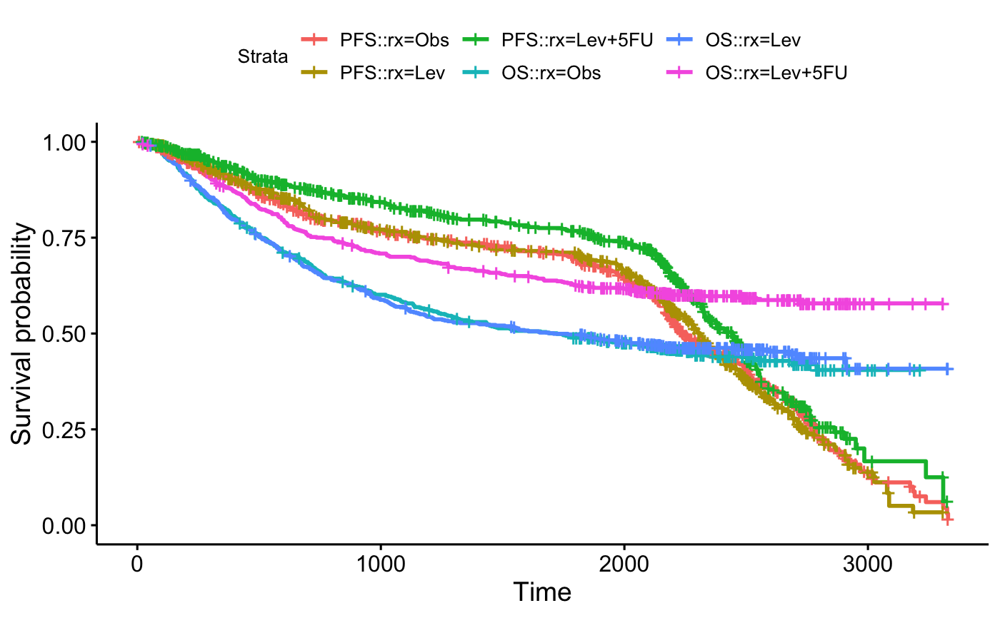

ggsurvplot_combine.RdCombine multiple survfit objects on the same plot. For example,
one might wish to plot progression free survival and overall survival on
the same graph (and also stratified by treatment assignment).
ggsurvplot_combine() provides an extension to the
ggsurvplot() function for doing that.
ggsurvplot_combine(fit, data, risk.table = FALSE, risk.table.pos = c("out", "in"), cumevents = FALSE, cumcensor = FALSE, tables.col = "black", tables.y.text = TRUE, tables.y.text.col = TRUE, ggtheme = theme_survminer(), tables.theme = ggtheme, keep.data = FALSE, risk.table.y.text = tables.y.text, ...)
| fit | a named list of survfit objects. |
|---|---|
| data | the data frame used to compute survival curves. |
| risk.table | Allowed values include:
|
| risk.table.pos | character vector specifying the risk table position. Allowed options are one of c("out", "in") indicating 'outside' or 'inside' the main plot, respectively. Default value is "out". |
| cumevents | logical value specifying whether to show or not the table of the cumulative number of events. Default is FALSE. |
| cumcensor | logical value specifying whether to show or not the table of the cumulative number of censoring. Default is FALSE. |
| tables.col | color to be used for all tables under the main plot. Default value is "black". If you want to color by strata (i.e. groups), use tables.col = "strata". |
| tables.y.text | logical. Default is TRUE. If FALSE, the y axis tick labels of tables will be hidden. |
| tables.y.text.col | logical. Default value is FALSE. If TRUE, tables tick labels will be colored by strata. |
| ggtheme | function, ggplot2 theme name. Default value is
theme_survminer. Allowed values include ggplot2 official themes: see
|
| tables.theme | function, ggplot2 theme name. Default value is
theme_survminer. Allowed values include ggplot2 official themes: see
|
| keep.data | logical value specifying whether the plot data frame should be kept in the result. Setting these to FALSE (default) can give much smaller results and hence even save memory allocation time. |
| risk.table.y.text | logical. Default is TRUE. If FALSE, risk table y axis tick labels will be hidden. |
| ... | other arguments to pass to the |
library(survival) # Create a demo data set #:::::::::::::::::::::::::::::::::::::::::::::::::::::::: set.seed(123) demo.data <- data.frame( os.time = colon$time, os.status = colon$status, pfs.time = sample(colon$time), pfs.status = colon$status, sex = colon$sex, rx = colon$rx, adhere = colon$adhere ) # Ex1: Combine null models #:::::::::::::::::::::::::::::::::::::::::::::::::::::::: # Fit pfs <- survfit( Surv(pfs.time, pfs.status) ~ 1, data = demo.data) os <- survfit( Surv(os.time, os.status) ~ 1, data = demo.data) # Combine on the same plot fit <- list(PFS = pfs, OS = os) ggsurvplot_combine(fit, demo.data)# Combine survival curves stratified by treatment assignment rx #:::::::::::::::::::::::::::::::::::::::::::::::::::::::: # Fit pfs <- survfit( Surv(pfs.time, pfs.status) ~ rx, data = demo.data) os <- survfit( Surv(os.time, os.status) ~ rx, data = demo.data) # Combine on the same plot fit <- list(PFS = pfs, OS = os) ggsurvplot_combine(fit, demo.data)